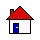
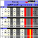

The Icons provide quick links to common pages such as:
Table 3.1. Icons
 | Home | This returns the user to the Home page | |
| Bugs/Suggestions | This takes the user to a page where they can enter suggestions or bug comments. Please Use!!! | ||
| Re-Login | Returns user to login page where they can redefine the User/Database/Project or turn off/on the top & bottom banners (freeing up at the same time some space on the sides of the screen) | ||
| Last 24 Hours | This displays the current status (including Avg Read Length, Phred 20 values, Good Wells, # of Mirrored Files, Machine) for Sequences Requested (or Run) in the last 24 hours. | ||
| Sample Sheets | This directs the user to the Sample Sheet main page where they can generate a sample sheet, or delete a recently made sample sheet | ||
| Reagents/Chemicals/Solutions | This sends the user to the Reagent/Chemical/Solution home page where they can Create/List/Edit/Delete Reagents (including Primers or 'Vector/Primer' direction information) | ||
| Equipment | This sends the user to the Equipment home page where they can List/Edit/Add Equipment or Maintenance procedures | ||
| Plates | This sends the user to the Plates home page where they can Create/Edit/Delete Plates (& New Libraries if needed). In addition, they can find plates by different search conditions and batch move the plates to another rack if needed. Re-Arrayed Plates can also be set up or viewed from this page. | |
 | Status | This sends user to the Summary Page which can list Read Summaries or Prep Status for Libraries or Projects | |
| Libraries | This directs the user to the Library home page where they can Create/Edit/View Libraries | ||
| Sources | This sends the user to the Source home page where they can manage Sources | ||
| Contacts | This sends the user to the Contacts home page where they can View/Edit/Add Contact or Organization information | ||
| Admin | This sends lab administrators to the 'Admin' page, where they can adjust defaults, add new Projects, edit Standard Solution chemistries etc. | ||
| Help | This allows users to access on-line help for the barcode page | ||
| New Changes | This describes briefly the latest changes that have been made to the barcode pages as new versions are released. An archive is also available at the bottom of the page linking to a history of changes made to each release. |